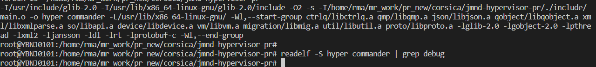
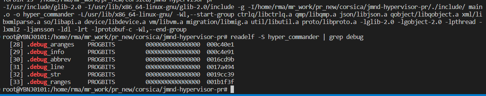

readelf elf文件格式分析
这个工具和objdump命令提供的功能类似，但是它显示的信息更为具体，并且它不依赖BFD库(BFD库是一个GNU项目，它的目标就是希望通过一种统一的接口来处理不同的目标文件）
ELF文件类型
ELF(Executable and Linking Format)是一种对象文件的格式，用于定义不同类型的对象文件(Object files)中都放了什么东西、以及都以什么样的格式去放这些东西。它自最早在 System V 系统上出现后，被 xNIX 世界所广泛接受，作为缺省的二进制文件格式来使用。可以说，ELF是构成众多xNIX系统的基础之一。
ELF文件有三种类型：
- 可重定位的对象文件(Relocatable file)
由汇编器汇编生成的 .o 文件 - 可执行的对象文件(Executable file)
可执行应用程序 - 可被共享的对象文件(Shared object file)
动态库文件，也即 .so 文件
- .text section 里装载了可执行代码；
- .data section 里面装载了被初始化的数据；
- .bss section 里面装载了未被初始化的数据；
- 以 .rec 打头的 sections 里面装载了重定位条目；
- .symtab 或者 .dynsym section 里面装载了符号信息；
- .strtab 或者 .dynstr section 里面装载了字符串信息；
参数说明
-a –all 全部 Equivalent to: -h -l -S -s -r -d -V -A -I-h –file-header 文件头 Display the ELF file header-l –program-headers 程序 Display the program headers–segments An alias for –program-headers-S –section-headers 段头 Display the sections’ header--sections An alias for –section-headers-e –headers 全部头 Equivalent to: -h -l -S-s –syms 符号表 Display the symbol table--symbols An alias for –syms-n –notes 内核注释 Display the core notes (if present)-r –relocs 重定位 Display the relocations (if present)-u –unwind Display the unwind info (if present)-d –dynamic 动态段 Display the dynamic segment (if present)-V –version-info 版本 Display the version sections (if present)-A –arch-specific CPU构架 Display architecture specific information (if any).-D –use-dynamic 动态段 Use the dynamic section info when displaying symbols-x –hex-dump=<number> 显示 段内内容Dump the contents of section -w[liaprmfFso] or -I –histogram Display histogram of bucket list lengths-W –wide 宽行输出 Allow output width to exceed 80 characters-H –help Display this information-v –version Display the version number of readelf
示例
想知道一个应用程序的可运行的架构平台:
1 | $readelf -h main| grep Machine |
-h选项将显示文件头的概要信息，从里面可以看到，有很多有用的信息：
1 | $readelf -h main |
一个编译好的应用程序，想知道其编译时是否使用了-g选项（加入调试信息）:
1 | $readelf -S main| grep debug |
用-S选项是显示所有段信息；如果编译时使用了-g选项，则会有debug段;
未加-g时无显示

添加-g时显示debug段信息

查看.o文件是否编入了调试信息（编译的时候是否加了-g):
1 | $readelf -S Shpos.o | grep debug |
完整输出
readelf输出的完整内容:
1 | $readelf -all a.out |